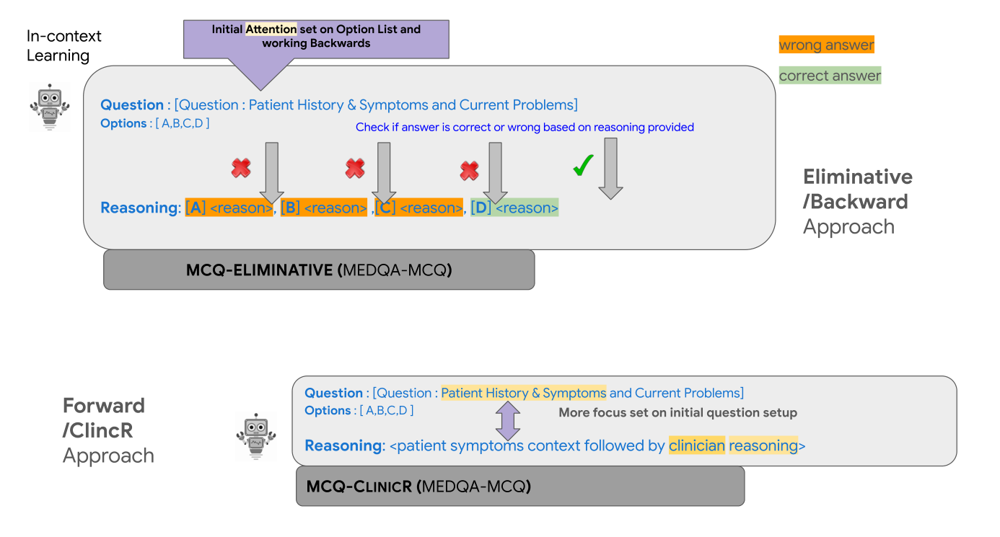
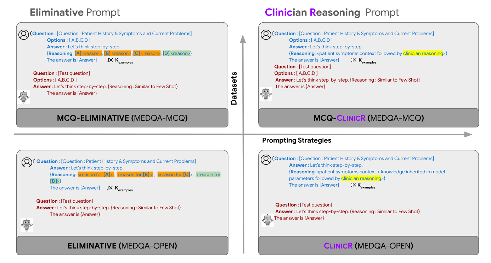

Open-Ended Medical Questions Need More Than Answer Choices
- Medical QA benchmarks usually hand the model four options. Real patients don't come with options, so we built MedQA-Open: MedQA-USMLE questions rewritten to be open-ended, with clinician-approved reasoned answers.
- ClinicR is a 5-shot chain-of-thought prompt, written with medical professionals, that reasons forward from the patient history and updates a differential diagnosis step by step.
- A forward-backward pipeline samples several ClinicR answers, then narrows them with an eliminative prompt or a trained verifier. With Llama-2-7B, expert agreement on open questions rises from 56% (eliminative prompt) to 83% (ClinicR) and 87% (ClinicR + verifier).
A multiple-choice medical question gives the model a list of possible answers. Real clinical questions do not. That difference makes it hard to tell whether a model can reason from a patient history, or is just good at choosing among the options it was handed.
Two ways to reason about a case
The standard few-shot chain-of-thought prompt for MedQA (Liévin et al., 2022) is eliminative. It copies the relevant history, then walks through options (A), (B), (C), …, accepting or rejecting each until one fits. That works when options exist. With an open question there is nothing to walk through. Clinicians instead build a differential diagnosis: take a finding, add or drop candidate diagnoses, take the next finding, and repeat until labs and context point to an answer.

The pipeline, written as notation
The paper describes these steps in prose; the notation below is a compact summary. Let \(q\) be an open-ended question.
In words: sample several complete answers with the ClinicR prompt, drop near-duplicates by lexical overlap, and keep the four the model finds most likely. The open question has become a four-option question whose options the model wrote.
In words: a reward model \(V_\phi\) scores each candidate answer \(o\) together with its reasoning \(r_o\), and the highest-scoring one is returned. The alternative backward step feeds the four options to the MCQ-Eliminative prompt instead.
In words: from each original MedQA multiple-choice question we make four training examples, one per option, labelled 1 if correct and 0 otherwise. Each is paired with a generated rationale for that option (about 97% correct on a 50-sample spot check). Llama-2-7B/70B-chat with a linear head is LoRA-trained on a reward-modelling loss.

What the experiments show
First, a sanity check: when options are given, ClinicR doesn't help. On the 1,273-question MedQA-MCQ test set, MCQ-ClinicR and MCQ-Eliminative are essentially tied (40.6% vs 41% with Llama-2-7B; 50% vs 52% with 70B). Incremental reasoning matters when the options are taken away.
For open-ended answers there is no exact-match metric, so eight final-year medical students rated each answer's reasoning and conclusion as Agree, Neutral or Disagree. They rated 500 MedQA-Open questions and 25 real cases contributed by practising clinicians (ClinicianCases).
| Method | MedQA-Open: share of answers medical experts agreed with (%) |
|---|---|
| Llama-2-7B-chat | |
| Eliminative | 56% |
| ClinicR | 83% |
| ClinicR → MCQ-Eliminative | 81% |
| ClinicR → Verifier | 87% |
| Llama-2-70B-chat | |
| Eliminative | 84% |
| ClinicR | 87% |
| ClinicR → MCQ-Eliminative | 87% |
| ClinicR → Verifier | 87% |
| ClinicianCases (25 real cases) | Llama-2-7B | Llama-2-70B |
|---|---|---|
| Eliminative | 90% | 86% |
| ClinicR | 88% | 82% |
| ClinicR → MCQ-Eliminative | 88% | 84% |
| ClinicR → Verifier | 90% | 82% |
Why would options hurt? MCQ distractors are designed to mislead medical students, and they can mislead models too, by confining reasoning to the listed choices. An open question lets the model consider the full range of possibilities from the history, which is closer to how diagnosis actually works.
Scope. This is a research result on question-answering benchmarks, evaluated with expert ratings on a 3-point scale. It is not clinical validation, and generated reasoning should not be used as medical advice or as a substitute for a clinician.
Future directions include testing other open models and grounding answers in non-parametric knowledge such as retrieval or medical knowledge graphs, to widen what the model knows and make it more confident.